Kampanja pölyttäjäkadon torjumiseksi
Seuraava mielenosoitus: 4.8. klo 14:00 - 5.8.2024 klo 14:00
📍 Kokoontuminen Eduskuntatalon edessä, josta marssimme Esplanadin puistoon
Noin 80 % viljelykasveista ja luonnonvaraisten kukkakasvien lajeista on riippuvaisia eläinten pölytyksestä. Ilman pölytystä kasvit eivät kykene tuottamaan siemeniä, jolloin uusia kasveja ei pääse syntymään.
Pölyttäjäkato kiihtyy ilmaston lämpenemisen, elinympäristöjen tuhoutumisen ja torjunta-aineiden käytön seurauksena. Tämä kato on suuri uhka globaalille ruoantuotannolle ja ihmiskunnan tulevaisuudelle.
Erityisesti vihannesten, marjojen ja hedelmien tuotanto tulee kärsimään kadon seurauksena, mikä vaikeuttaa
tärkeiden vitamiinien saantia ja tasapainoisen ruokavalion mahdollisuutta entisestään.
Uhanalaisten lajien määrä on jyrkästi kasvanut kaikissa pölyttäjäryhmissä Suomessa vuodesta 2000 lähtien.
LähteetOn toimittava pölyttäjäkadon pysäyttämiseksi ennen kuin on liian myöhäistä. Tule kapinoimaan pölyttäjien puolesta! Vaaditaan yhdessä konkreettisia toimia pölyttäjien suojelemiseksi.
[2]: https://eur-lex.europa.eu/legal-content/FI/TXT/HTML/?uri=CELEX:52018DC0395&from=en
[3]: https://www.duodecimlehti.fi/duo14408
[4]: https://yle.fi/a/3-12521737
[5]: Miksi mehiläiskannat ovat heikentyneet? | Aiheet | Euroopan parlamentti
[6]: Pelasta pörriäinen – pölyttäjäkato vaikuttaa jokaisen arkeen - Kivikangas